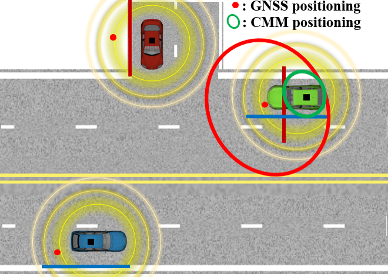
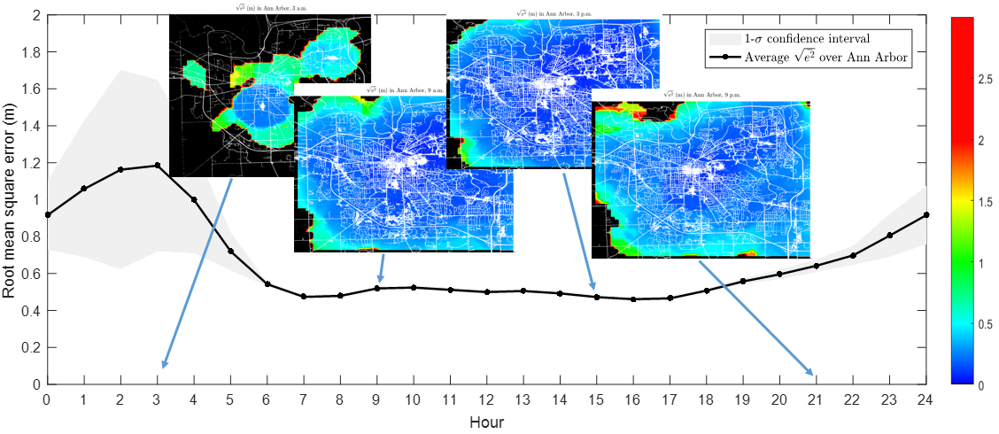
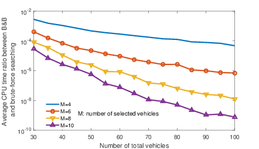

Localization Enhancement in the V2X Network
Good localization is essential in the deployment of autonomous vehicles. Currently, high accuracy GNSS devices are still too expensive for passenger cars. Based on the booming V2X or Connected Vehicle technology, we are exploring approaches that can enhance localization quality for a network of vehicles on average but with no extra cost, as long as the vehicles are connected by exchanging their raw GNSS information.
Improving Localization Accuracy in the Connected Vehicle Network

Macheng Shen, Ding Zhao, Jing Sun,
''Enhancement of Low-cost GNSS Localization in Connected Vehicle Networks Using Rao-Blackwellized Particle Filters,
'' Proceedings of the IEEE 19th International Intelligent Transportation Systems Conference (ITSC), Rio de Janeiro, Brazil, Nov 1-4, 2016.
[paper ]
[cite ]
Macheng Shen, Ding Zhao, Jing Sun, Huei Peng,
''Improving Localization Accuracy in Connected Vehicle Networks Using Rao-Blackwellized Particle Filters: Theory, Simulations, and Experiments,''
IEEE Transactions on Intelligent Transportation Systems (under review), 2017.
[paper ]
[cite ]
Abstract — Cooperative map matching (CMM) uses the Global Navigation Satellite System (GNSS) position information of a group of vehicles to improve the standalone localization accuracy. It has been shown, in our previous work, that the GNSS error can be reduced from several meters to sub-meter level by matching the biased GNSS positioning to a digital map with road constraints. While further error reduction is expected by increasing the number of participating vehicles, fundamental questions on how the vehicle membership within CMM affects the performance of the CMM results need to be addressed to provide guidelines for design and optimization of the vehicle network. This work presents a theoretical study that establishes a framework for quantitative evaluation of the impact of the road constraints on the CMM accuracy. More specifically, a closed-form expression of the CMM error in terms of the road constraints and GNSS error is derived based on a simple CMM rule. The asymptotic decay of the CMM error as the number of vehicles increases is established and justified through numerical simulations. Moreover, it is proved that the CMM error can be minimized if the directions of the roads on which the connected vehicles travel obey a uniform distribution. Finally, the localization accuracy of CMM is evaluated based on the Safety Pilot Model Deployment and Pillar dataset of Ann Arbor traffic flow collected over three years period. The contributions of this work include establishing a theoretical foundation for CMM as well as providing insight and motivation for applications of CMM.
The Impact of Road Configuration on V2V-based Cooperative Localization

Macheng Shen, Ding Zhao, Jing Sun,
''The Impact of Road Configuration on V2V-based Cooperative Localization,''
IEEE 85th Vehicular Technology Conference (VTC), Sydney, Australia, June 4-7, 2017.
[paper ]
[cite ]
Macheng Shen, Ding Zhao, Jing Sun,
''The Impact of Road Configuration in V2V-based Cooperative Localization: Mathematical Analysis and Real-world Evaluation,''
IEEE Transactions on Intelligent Transportation Systems (under review), 2017.
[paper ]
[cite ]
Abstract — Cooperative map matching (CMM) uses the Global Navigation Satellite System (GNSS) position information of a group of vehicles to improve the standalone localization accuracy. It has been shown, in our previous work, that the GNSS error can be reduced from several meters to sub-meter level by matching the biased GNSS positioning to a digital map with road constraints. While further error reduction is expected by increasing the number of participating vehicles, fundamental questions on how the vehicle membership within CMM affects the performance of the CMM results need to be addressed to provide guidelines for design and optimization of the vehicle network. This work presents a theoretical study that establishes a framework for quantitative evaluation of the impact of the road constraints on the CMM accuracy. More specifically, a closed-form expression of the CMM error in terms of the road constraints and GNSS error is derived based on a simple CMM rule. The asymptotic decay of the CMM error as the number of vehicles increases is established and justified through numerical simulations. Moreover, it is proved that the CMM error can be minimized if the directions of the roads on which the connected vehicles travel obey a uniform distribution. Finally, the localization accuracy of CMM is evaluated based on the Safety Pilot Model Deployment and Pillar dataset of Ann Arbor traffic flow collected over three years period. The contributions of this work include establishing a theoretical foundation for CMM as well as providing insight and motivation for applications of CMM.
Optimization of Vehicle Connection Selection in V2V-based Cooperative Localization

Macheng Shen, Ding Zhao, Jing Sun,
''Optimization of Vehicle Connections in V2V-based Cooperative Localization,
'' Proceedings of the IEEE 20th International Intelligent Transportation Systems Conference (ITSC), Yokohama, Japan, October 16-19, 2017.
[paper ]
[cite ]
Abstract — Cooperative map matching (CMM) uses the Global Navigation Satellite System (GNSS) positioning of a group of vehicles to improve the standalone localization accuracy. It has been shown to reduce GNSS error from several meters to sub-meter level by matching the biased GNSS positioning of four vehicles to a digital map with road constraints in our previous work. While further error reduction is expected by increasing the number of participating vehicles, fundamental questions on how the vehicle membership of the CMM affects the performance of the GNSS-based localization results need to be addressed to provide guidelines for design and optimization of the vehicle network. The quantitative relationship between the estimation error and the road constraints has to be systematically investigated to provide insights. In this work, a theoretical study is presented that aims at developing a framework for quantitatively evaluating effects of the road constraints on the CMM accuracy and for eventual optimization of the CMM network. More specifically, a closed form expression of the CMM error in terms of the road angles and GNSS error is first derived based on a simple CMM rule. Then a Branch and Bound algorithm and a Cross Entropy method are developed to minimize this error by selecting the optimal group of vehicles under two different assumptions about the GNSS error variance.